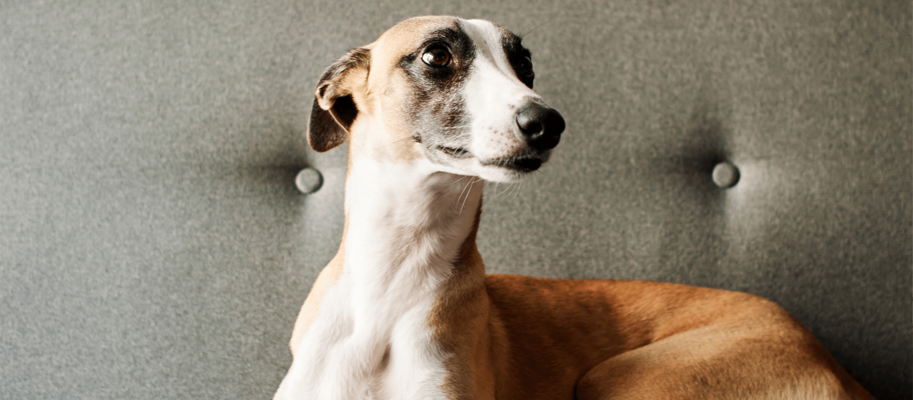
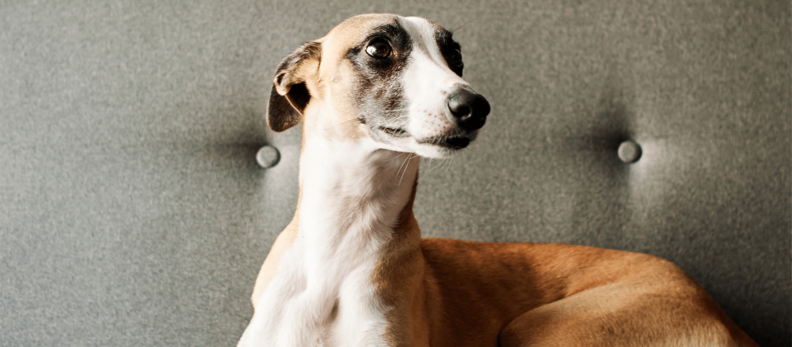

About
A member of the sighthound family, whippets bear a close resemblance to their much larger and better-known cousin, the greyhound.
Sighthounds' now-increasingly historical associations with hunting and use in racing often causes would-be pet owners to overlook them when seeking a new canine companion. For whippets in particular, this problem is compounded by a lack of general awareness about the breed.
World of Whippets offers resources to learn about these gentle-natured, deeply affectionate and surprisingly docile dogs.
 


Common Myths
"Whippets are high-energy dogs"
Like their larger counterparts, the greyhound, whippets are a docile breed that like to snooze the day away in a cosy spot. For this reason, they're often compared to cats!
"Sighthounds are large dogs"
Sighthounds come in all shapes and sizes, from the miniscule Italian Greyhound to the gentle-giant Irish Wolfhound. Whippets are on the smaller side, and often mistaken for greyhound puppies!
"Whippets require a lot of exercise"
Adult whippets need two 20-minute walks per day and the chance to sprint off-leash in a secure area. Puppies need only gentle exercise but lots of mental stimulation!
"Whippets can't live with cats"
This varies from dog to dog, and a shelter will be able to tell you about any dog you're considering adopting, but many whippets count their feline housemates as best friends!
"Whippets don't make good pets"
When you adopt a whippet, you get a new family member and they will readily embrace their new “pack”. They are extremely affectionate and make excellent companions.

"Whippets aren't suited to homes with children"
Docile, patient and easy-going, sighthounds in general can be excellent with children and may even see them as peers. As with all dogs, children should be shown how to interact nicely with their new pal.
Whippets
As any whippet owner will gleefully tell you, these dogs are a delightful paradox. Nature's fastest accelerating canine, capable of moving at speeds of up to 35mph, they have little stamina and when not sprinting, they prefer to be sleeping. Elegant, graceful and descended from the dogs of the Ancient Egyptian Pharaohs, they are also silly, goofy and remarkably clumsy. Certainly, when moving at speed, they enjoy dodging around obstacles and never miss their target, yet a whippet might trip over its own feet while standing still! Sociable and friendly, they can also be shy and sensitive. What remains unchanging, however, is their steadfast good nature, loyalty and affection.
Sighthounds
Sighthounds are so named for their exceptionally good vision. This class of dog has often been used for sport. Sadly, this has given rise to a large number of retired and non-performing dogs, including puppies, being placed in shelters. As a result, there are a great many sighthounds in need of loving homes. This also extends to lurchers, dogs which are a mix between a sighthound and some other breed.
As a rule, sighthounds are generally easy-going, calm and gentle creatures. For most breeds, their unusual build means they prefer to lie down rather than sit, and their lazy nature means they're likely to snooze while they're at it! Sighthounds rarely bark unless joining in with the other canines in your household (although they can be very vocal as puppies, this falls away as they mature). Most breeds shed very little and require little grooming. True pack animals, they thrive on companionship and will be very happy simply to be in your company.
Each dog is different however, and any shelter will be happy to help you find a suitable match for you.